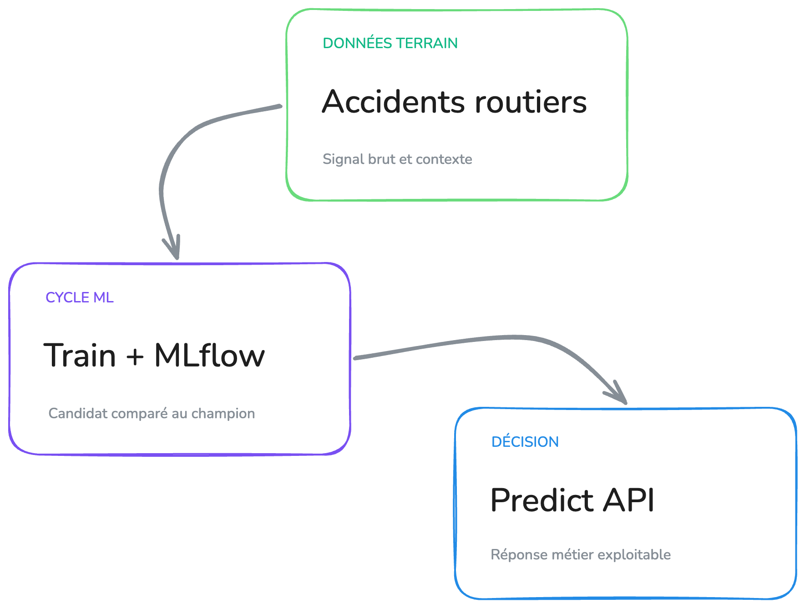

Stack, entraînement, publication puis Airflow.
01 / 08Fondations
Une plateforme modulaire, du signal terrain à la décision
Transformer un modèle LightGBM binaire en un service automatisé, traçable et observable.
Orchestration
Airflow
Automatise la chaîne hebdomadaire.
Cycle ML
MLflow Registry
Compare un candidat au champion.
Prédiction
Predict API
Sert le champion BentoML en production.

Limite chaque accès à son usage.
Mesure, centralise et alerte.